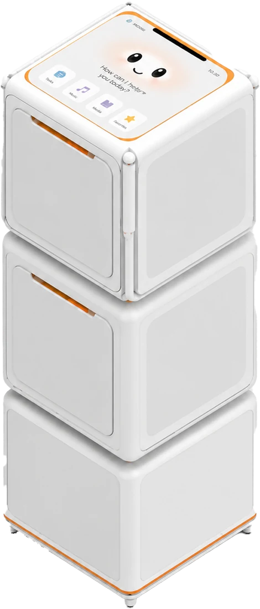
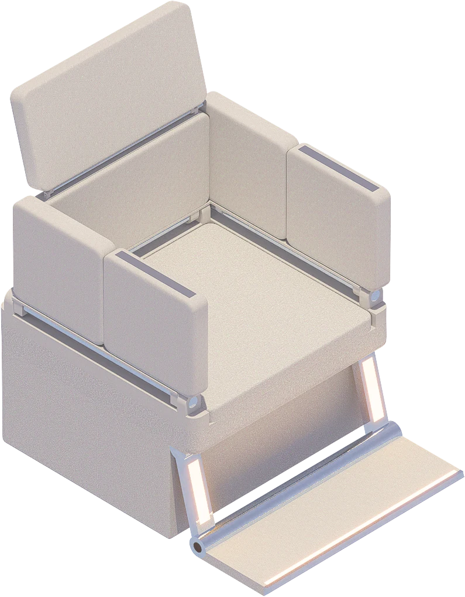
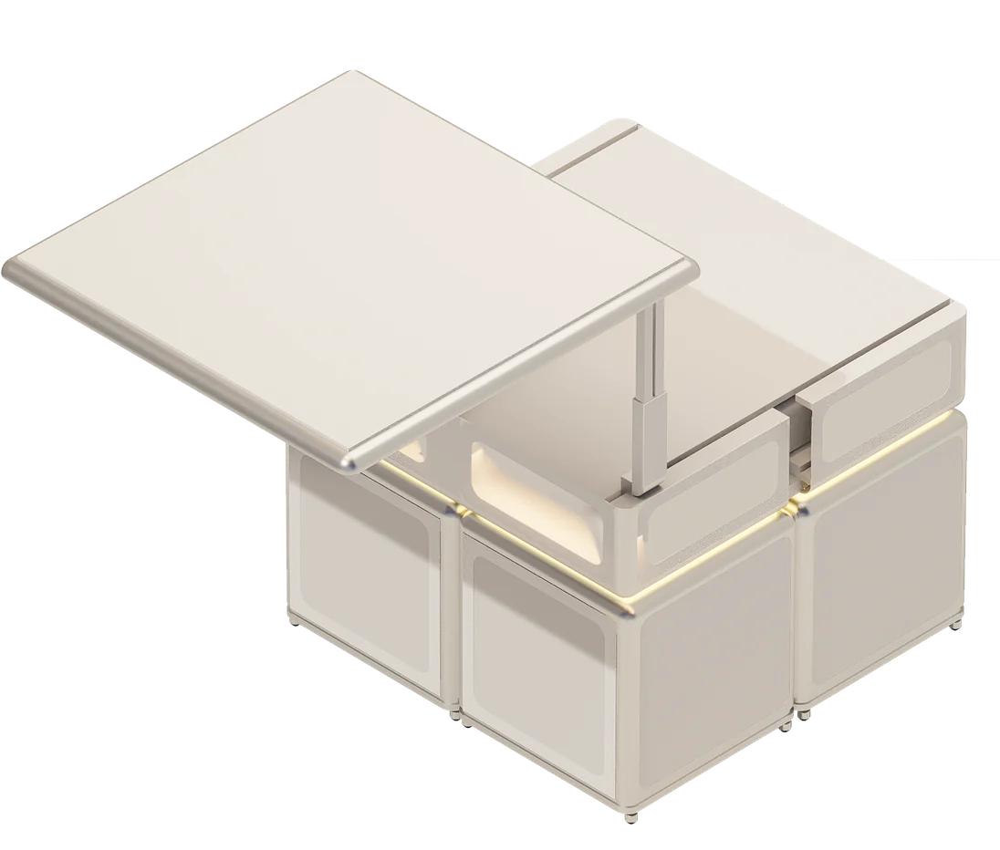

LIBRARY / SPECIFIC FURNITURE
Specific Furniture
Three purpose-built pieces that move with the resident, beyond the static cube families.

MNEMO ROBOT
CARE COMPANION · STORAGE · SAFETY
- Smart Panel
- A clear touch interface for reminders, status feedback and daily care information.
- Mobile Care Storage
- Stores and delivers essential items, cutting walking distance and physical strain.
- Safety & Emergency Monitoring
- Infrared sensors detect falls or unusual activity and trigger assistance automatically.
- Emotional & Interaction Status
- Standby, listening, reminder and assistance states, readable at a glance.
SOFLOW SOFA
SOFA-WHEELCHAIR INTEGRATION
- Soft Panel
- A seamless fabric panel, easy to clean, cushioning collisions while staying comfortable.
- Foldable Armrests
- The wheelchair folds into the sofa or bed edge and becomes part of the furniture.
- Intelligent Control Panel
- A simple control surface that lets seniors drive the chair without menus.
- Foot Pedal Design
- Footrests disappear when docked; edge lighting shows the pedal area at night.


MORPH
CONVERTIBLE COFFEE & DINING TABLE
- Convertible Tabletop
- Switches between coffee-table and dining-table modes to support different everyday activities in one compact footprint.
- Horizontal Sliding System
- The tabletop moves outward to create additional usable space without requiring the furniture itself to be relocated.
- Vertical Lift Mechanism
- Raises the surface to dining height, reducing bending and supporting a more comfortable seated posture.
- Telescopic Extension Support
- Integrated supports extend with the tabletop to provide a stable, enlarged surface for dining and daily use.